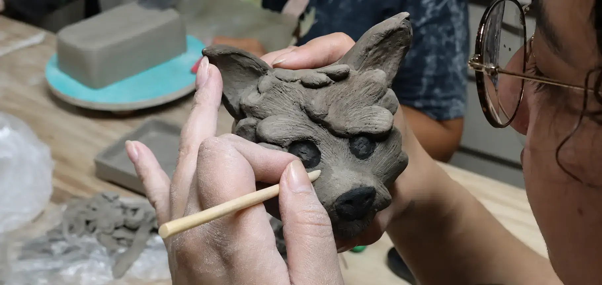
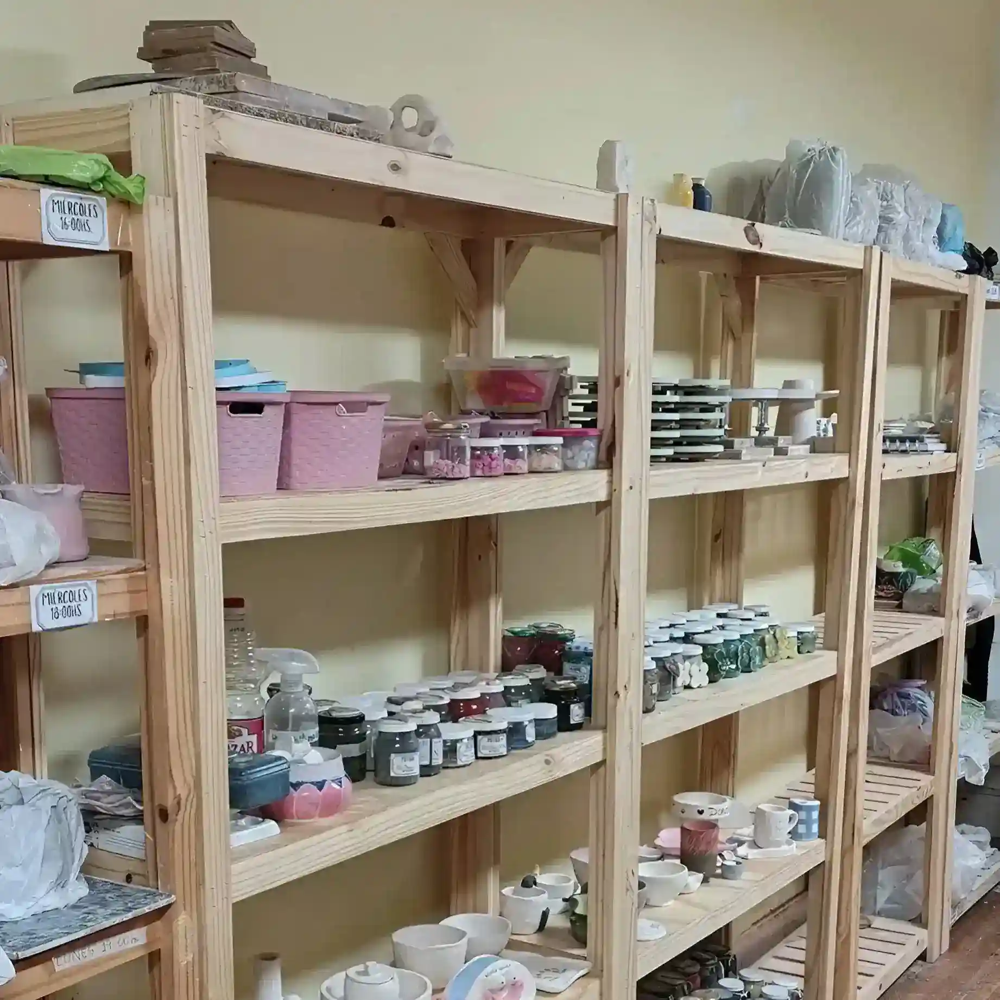
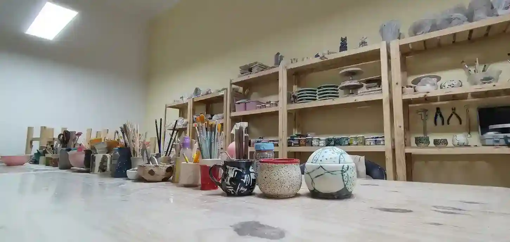
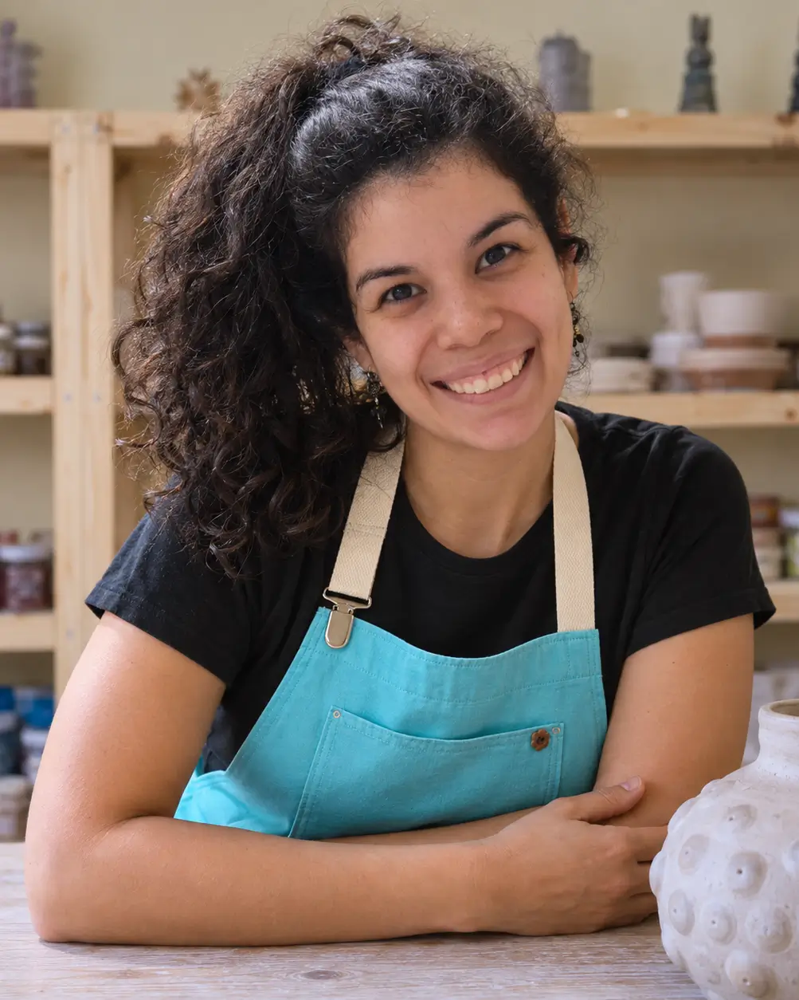

Bajá el ritmo, hundí las manos en el barro y creá algo con tus propias manos. Elegí entre alfarería en torno o modelado manual en grupos reducidos, con materiales y horneadas incluidas. No necesitás experiencia previa.
¿Preferís probar antes de anotarte? Vení a una clase de prueba
¿Es para regalar? Regalá una clase de cerámica
Si estás buscando dónde hacer cerámica en Buenos Aires, Artesana del Barro es el lugar. Estamos en Caballito, a 2 cuadras del Subte Línea A (Est. Río de Janeiro) y a 1 cuadra del Parque Rivadavia.
No somos un instituto rígido, somos un espacio para que aprendás a trabajar con barro y puedas llevarte algo creado con tus propias manos. Ya sea que quieras descubrir el torno alfarero o prefieras el modelado manual sobre la mesa, acá vas a aprender cerámica de forma práctica.
Te acompañamos paso a paso, desde el primer pellizco hasta el esmaltado final. Ya pasaron más de 120 alumnas por nuestro taller en el límite con Almagro. Podés empezar aunque nunca hayas tocado arcilla.
Mirá nuestros planes y precios o revisá los horarios disponibles.



Todo está incluido en tu plan. Solo traés las ganas.
Arquitecta · Ceramista · Docente

Mariana Parra Corrales es una arquitecta y ceramista venezolana, radicada en Buenos Aires desde 2019. Se define como creativa, práctica, responsable, emprendedora e inquieta: su motivación es investigar y materializar ideas a través del arte, la ciencia y la técnica.
Se recibió de arquitecta en 2014 en Maracay, Venezuela. Como arquitecta interiorista, reconoce el valor de la decoración en cada objeto, y en su trabajo cerámico busca transmitir sensibilidad humana y natural a través de texturas naturales.
Conoció la cerámica cuando era niña y reconectó con ella en 2020. Un año después, en 2021, inició su formación como ceramista en la Escuela de Cerámica Artística, conocida como "La Bulnes". La pintura sobre papel y lienzo, utilizando acuarelas, acrílicos y crayones, es otra de sus pasiones. Esta búsqueda por el color también se trasladó a sus piezas cerámicas, dando lugar a una propuesta donde el color ocupa un lugar protagonista.
Empezó a dar clases en marzo de 2024, en su propio taller y en otros espacios, con workshops de pastas coloreadas y pintura sobre bizcocho para grupos de hasta 10 personas. Ese recorrido es el que hoy sostiene Artesana del Barro, en Caballito, límite con Almagro.
Dominá el torno alfarero con clases personalizadas y equipamiento profesional.
Bizcocho y esmalte incluidos en todos los planes. También servicio externo para ceramistas.
Gran variedad de esmaltes y pigmentos. Te enseñamos a esmaltar como una profesional.
A 2 cuadras del Subte A y 1 cuadra del Parque Rivadavia. Fácil acceso desde toda CABA.
Sin experiencia previa: arrancá con modelado manual en mesa o probá una clase de prueba antes de anotarte al plan.
Alfarería en torno alfarero profesional: centrado, apertura y levantado de paredes, con 4 tornos en el taller.
Usá nuestro horno de 70 litros: servicio de horneadas para ceramistas y artesanas independientes de toda CABA.
Regalá una clase de cerámica: modelado a mano o torno, con todo incluido y turnos de lunes a sábado.
Reseñas reales de Google, verificadas.
Estamos en Caballito, en el límite con Almagro, a 2 cuadras de la estación Río de Janeiro del Subte Línea A y a 1 cuadra del Parque Rivadavia. Es una zona muy accesible desde Palermo, Villa Crespo, Boedo, Flores, San Cristóbal y Balvanera.
Hay turnos de lunes a sábado: de lunes a viernes entre las 9:30 y las 20:30, y los sábados entre las 11:00 y las 16:00. Cada turno dura 2 horas. Podés ver la grilla completa de horarios y cupos.
El Plan Modelado (modelado manual en mesa) cuesta $79.000 por mes y el Plan Torno (alfarería en torno alfarero) $90.000 por mes. Ambos incluyen pasta, herramientas, esmaltes y horneadas: no hay materiales extra que comprar.
No. Las clases están diseñadas tanto para principiantes como para quienes ya tienen experiencia, y todo el material está incluido. Las profesoras te guían paso a paso en grupos reducidos.
Elegí tu horario y empezá a trabajar con barro en nuestro taller. Aprender cerámica es posible, y te acompañamos paso a paso.